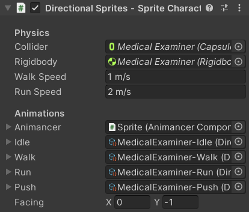

Location: Samples/07 Sprites/02 Directional Character
Recommended After: Directional Basics
Learning Outcomes: in this sample you will learn:
How to use Directional Animation Sets with more complex behaviour.
How the code for a character with 4 directions also works for one with 8 directions.
Summary
This sample demonstrates how you can use Directional Animation Sets in a more complex character than the Directional Basics sample and then use the same script for a character that includes diagonal movement.
Created by Chasersgaming
CC0 Licence
- Using the
AnimationSet.Snapmethod to clamp your input vector to the nearest direction included in the set allows you to support 4 or 8 directions without hard coding things to a specific number of directions. TimeSynchronizers allow you to easily synchronize theNormalizedTimeof related animations when you switch between them.
Overview
The general code structure is basically just a more complex version of the Directional Basics sample:
{kind=link}
There are two characters in this sample:
- The Medical Examiner has 4 directional animations for each of the animation sets as shown above.
- The Pirate has 8 of each (the same 4 and diagonals between them).
This is one of the major advantages Animancer has over Mecanim: you can define data structures to suit your needs and reuse them throughout your projects instead of trying to manually duplicate a particular pattern in an Animator Controller and being unable to easily refactor or extend what you have made.
Fields
[Header("Physics")]
[SerializeField] private CapsuleCollider2D _Collider;
[SerializeField] private Rigidbody2D _Rigidbody;
[SerializeField] private float _WalkSpeed = 1;
[SerializeField] private float _RunSpeed = 2;
[Header("Animations")]
[SerializeField] private AnimancerComponent _Animancer;
[SerializeField] private DirectionalAnimationSet _Idle;
[SerializeField] private DirectionalAnimationSet _Walk;
[SerializeField] private DirectionalAnimationSet _Run;
[SerializeField] private DirectionalAnimationSet _Push;
[SerializeField] private Vector2 _Facing = Vector2.down;
- We have quite a few Serialized Fields, so the
[Header]attribute allows us to group them under an appropriate headding in the Inspector. DirectionalAnimationSet8Inherits from the baseDirectionalAnimationSetso either type of asset can be assigned to theDirectionalAnimationSetfields. This allows the same script to be used for both the Medical Examiner (4 directions) and Pirate (8 directions).
| Medical Examiner | Pirate |
|---|---|
|  | |
States
As you can see from the fields above, these characters have four states: Idle, Walk, Run, and Push.
Idle
Idle will be used when the player isn't trying to move. This is similar to the Directional Basics sample, except that this time we're storing the input vector and animation set so that we can determine how to apply the Movement.
private Vector2 _Movement;
private DirectionalAnimationSet _CurrentAnimationSet;
protected virtual void Awake()
{
_CurrentAnimationSet = _Idle;
}
protected virtual void Update()
{
_Movement = SampleInput.WASD;
if (_Movement != Vector2.zero)
{
_Movement = _CurrentAnimationSet.Snap(_Movement);
_Movement = Vector2.ClampMagnitude(_Movement, 1);
_Facing = _Movement;
UpdateMovementState();// See Below.
}
else
{
Play(_Idle);
}
}
private void Play(DirectionalAnimationSet animations)
{
_CurrentAnimationSet = animations;
_Animancer.Play(animations.GetClip(_Facing));
}
Unlike the Directional Basics sample, this time we have several different possible animations to use when moving so the decision of which one to use is handled by a separate method:
Updatedecides whether to move or not and gathers the details that will be necessary to physically move the object.UpdateMovementStatedecides which movement animation to actually use.
This way we avoid putting too many responsibilities in a single method.
Push
When moving, Push logically takes priority over the other two if you're moving against a solid object so we need to detect if that's currently happening using _Collider.GetContacts:
private static readonly List<ContactPoint2D> Contacts = new();
private void UpdateMovementState()
{
int contactCount = _Collider.GetContacts(Contacts);
for (int i = 0; i < contactCount; i++)
{
A ContactPoint2D contains various details such as the point of contact and the collider that we're touching, but all we're interested in is the normal which is a Vector2 that tells us which direction the collision is comming from. By comparing the angle between that vector and our movement direction, we can determine if we're actually trying to move towards that object to push it or just brushing past it:
- If they are 180 degrees apart, we're moving straight towards the object and want to push it.
- If they are 90 degrees apart, we're moving past the object and don't want to push it.
- 135 degrees is halfway between those two and could work either way, but since you're moving diagonally across the surface of the object you probably want to move rather than push it.
- So 150 degrees or more was decided as the threshold for pushing an object. The code is written as
180 - 30since it's a bit clearer that we want to be within30degrees rather than simply writing150. Note that since both numbers are Constants, the compiler will perform the subtraction at compile-time rather than needing to do it every time the method is executed at runtime (not that this single operation would have any real effect on the performance of your game either way).
if (Vector2.Angle(Contacts[i].normal, _Movement) > 180 - 30)
{
So if we determine that the angle is right for pushing, we play the appropriate animation and return immediately so it doesn't execute the rest of the method.
Play(_Push);
return;
}
}
// The UpdateMovementState method continues below.
You might also consider checking whether the colloding object has a Rigidbody2D that you can actually push (or some other component to mark it as "pushable"), but in this sample we don't mind playing the Push animation when moving against a wall.
Walk and Run
If the character isn't trying to Push anything, we choose between Walk and Run based on whether or not the player is holding Left Shift using a Conditional Operator:
DirectionalAnimationSet animations = SampleInput.LeftShiftHold ? _Run : _Walk;
Play(animations);
}
Synchronization
With the implementation so far, every time the character changes between Walk and Run, it will restart from the beginning of the new animation. The problem isn't usually too obvious with animations like these which only have a small number of frames, but in smoother animations it can be very jarring when a character snaps from one part of the Walk cycle to a totally different part of the Run cycle. In the worst case, repeatedly swapping between Walk and Run would only let it play the start of each animation before swapping again.
This problem can be avoided by synchronizing the time of the previous and next animations:
| Not Synchronized | Synchronized |
|---|---|
| Every animation change starts from the beginning. | Changing animations continues from the current point in the walk cycle. |
Mixers have inbuilt synchronization but that wouldn't let us use Directional Animation Sets and would be much less efficient and convenient to use. So instead, this sample keeps the animations separate and uses a TimeSynchronizer to keep them synchronized.
First, we need a way to define the different animation groups so that we can synchronize any animation changes within a group but not synchronize when changing to a different group. The easiest way to do this is often an enum:
public enum AnimationGroup
{
Other,// Idle.
Movement,// Walk, Run, Push.
}
Then we can make a TimeSynchronizer field with that as the group type:
private readonly TimeSynchronizer<AnimationGroup>
TimeSynchronizer = new();
Every time we play an animation, we will now need to specify the group as well:
private void Play(DirectionalAnimationSet animations, AnimationGroup group)
{
Actually using the synchronizer is easy:
- Call one of the
StoreTimemethods before playing a new animation:
TimeSynchronizer.StoreTime(_Animancer);
- Play the new animation as you normally would:
_CurrentAnimationSet = animations;
_Animancer.Play(animations.GetClip(_Facing));
- Call one of the
SyncTimemethods after playing the animation:
TimeSynchronizer.SyncTime(_Animancer, group);
}
So now we have to specify the group whenever we play something:
Play(_Idle, AnimationGroup.Other);
Play(_Push, AnimationGroup.Movement);
DirectionalAnimationSet animations = SampleInput.LeftShiftHold ? _Run : _Walk;
Play(animations, AnimationGroup.Movement);
Movement
Since the character only has animations for a specific set of directions, we want to only allow them to move in those exact directions (this won't always be the case, it's a stylistic choice for you to decide how your game looks and feels):
- The Medical Examiner only has 4 directions so we don't want them to move diagonally.
- The Pirate has 8 directions which is all a keyboard can really do, but if the player were to use a controller joystick we could receive input from any angle so we still want to limit them to the available animations.
This script doesn't actually know how many directions the character supports, but it can simply ask the DirectionalAnimationSet to Snap the movement vector to the closest supported direction:
// in Update when moving:
// Note that Snap returns the modified vector, it doesn't modify the input directly.
_Movement = _CurrentAnimationSet.Snap(_Movement);
Using the _CurrentAnimationSet to snap the direction has the added benefit of allowing individual actions to have differing numbers of supported directions. For example, your character might have 8 directions for most actions but only 4 for interacting with a specific object. Or you could even make a DirectionalAnimationSet1 if you only have a single animation for an object that always has the same orientation such as pushing open a large boss door which will always be facing straight at the screen.
Holding multiple directions on a keyboard to move diagonally gives you a longer input vector than only holding a single direction.
This would cause the character to move faster diagonally than other directions which we don't want, so we can simply use Vector2.ClampMagnitude to shorten the input vector if it's too long:
_Movement = Vector2.ClampMagnitude(_Movement, 1);
Now that we know which direction we want to move we just need to do it. Physical movement is something that should be as consistent as possible, so we want to update it at a fixed rate rather than allowing it to vary based on the rendering frame rate.
protected virtual void FixedUpdate()
{
float speed = _CurrentAnimationSet == _Run ? _RunSpeed : _WalkSpeed;
_Rigidbody.velocity = _Movement * speed;
}
Using a Rigidbody2D means Unity will already update it at a fixed rate so that code could simply have been at the end of the Update method and would achieve the exact same result. The distinction is much more important if you're applying gradual acceleration which will give slight differences depending on how you apply it.
Pixel Perfect
Pixel art tends to not look very good if the pixels of the characters and other objects don't line up with each other, but fortunately the PixelPerfectCamera in Unity's 2D Pixel Perfect package can easily solve this problem. That system has no direct interaction with animations so you can simply follow its instructions to use it normally.
| Regular | Pixel Perfect |
|---|---|
| You can see a gap smaller than a pixel between the crate and the wall. | The crate is physically in the same position, but visually it looks correctly snapped to the nearest pixel. |
Edit Mode
In order to ensure that the SpriteRenderer shows the correct Sprite in Edit Mode once we assign the animations to our script, it has basically the same OnValidate method used in the Directional Basics sample, except that this time we use AnimancerUtilities.EditModePlay so we can see the Idle animation actually playing in Edit Mode rather than only showing its first frame.
#if UNITY_EDITOR
protected virtual void OnValidate()
{
if (_Idle != null)
_Idle.GetClip(_Facing).EditModePlay(_Animancer);
}
#endif
Sub-Assets
Since the there are lots of animations in this sample and they are each only used by a single DirectionalAnimationSet, the Drag and Drop Sub-Assets feature of Inspector Gadgets Pro was used to turn the animations into sub-assets of the set in order to organise them a bit better.
Conclusion
Click here to see the full DirectionalCharacter script.
using Animancer;
using UnityEngine;
public class DirectionalCharacter : MonoBehaviour
{
[Header("Physics")]
[SerializeField] private CapsuleCollider2D _Collider;
[SerializeField] private Rigidbody2D _Rigidbody;
[SerializeField, MetersPerSecond] private float _WalkSpeed = 1;
[SerializeField, MetersPerSecond] private float _RunSpeed = 2;
[Header("Animations")]
[SerializeField] private AnimancerComponent _Animancer;
[SerializeField] private DirectionalAnimationSet _Idle;
[SerializeField] private DirectionalAnimationSet _Walk;
[SerializeField] private DirectionalAnimationSet _Run;
[SerializeField] private DirectionalAnimationSet _Push;
[SerializeField] private Vector2 _Facing = Vector2.down;
private Vector2 _Movement;
private DirectionalAnimationSet _CurrentAnimationSet;
private static readonly TimeSynchronizer<AnimationGroup>
TimeSynchronizer = new();
public enum AnimationGroup
{
Other,
Movement,
}
protected virtual void Awake()
{
_CurrentAnimationSet = _Idle;
}
protected virtual void Update()
{
_Movement = SampleInput.WASD;
if (_Movement != Vector2.zero)
{
_Movement = _CurrentAnimationSet.Snap(_Movement);
_Movement = Vector2.ClampMagnitude(_Movement, 1);
_Facing = _Movement;
UpdateMovementState();
}
else
{
Play(_Idle, AnimationGroup.Other);
}
}
private void Play(DirectionalAnimationSet animations, AnimationGroup group)
{
TimeSynchronizer.StoreTime(_Animancer);
_CurrentAnimationSet = animations;
_Animancer.Play(animations.GetClip(_Facing));
TimeSynchronizer.SyncTime(_Animancer, group);
}
private static readonly List<ContactPoint2D> Contacts = new();
private void UpdateMovementState()
{
int contactCount = _Collider.GetContacts(Contacts);
for (int i = 0; i < contactCount; i++)
{
if (Vector2.Angle(Contacts[i].normal, _Movement) > 180 - 30)
{
Play(_Push, AnimationGroup.Movement);
return;
}
}
DirectionalAnimationSet animations = SampleInput.LeftShiftHold ? _Run : _Walk;
Play(animations, AnimationGroup.Movement);
}
protected virtual void FixedUpdate()
{
float speed = _CurrentAnimationSet == _Run ? _RunSpeed : _WalkSpeed;
_Rigidbody.velocity = _Movement * speed;
}
#if UNITY_EDITOR
protected virtual void OnValidate()
{
if (_Idle != null)
_Idle.GetClip(_Facing).EditModePlay(_Animancer);
}
#endif}
}
Even with only Idle, Walk, Run, and Push animations, that script is quite long and would become harder and harder to maintain if you started adding more things the character can do. The State Machines samples demonstrate a much better way of structuring complex characters which requires a bit more effort to set up initially, but makes things easier to modify and debug which saves much more effort later on.